Un rând din fișa postului
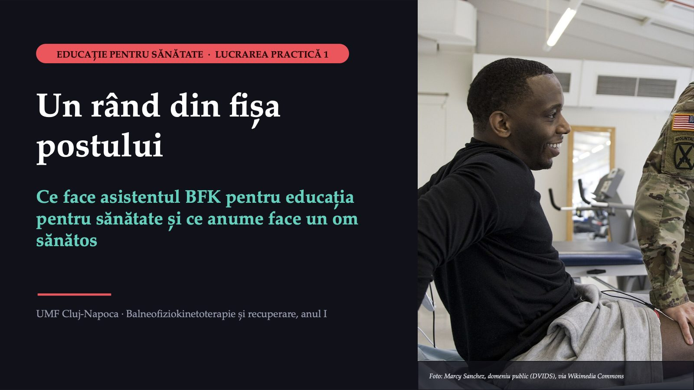
1 / 17Peste trei ani lucrați ca asistent BFK, cu zece-doisprezece pacienți pe zi. Cât din timpul vostru credeți că va fi educație pentru sănătate?
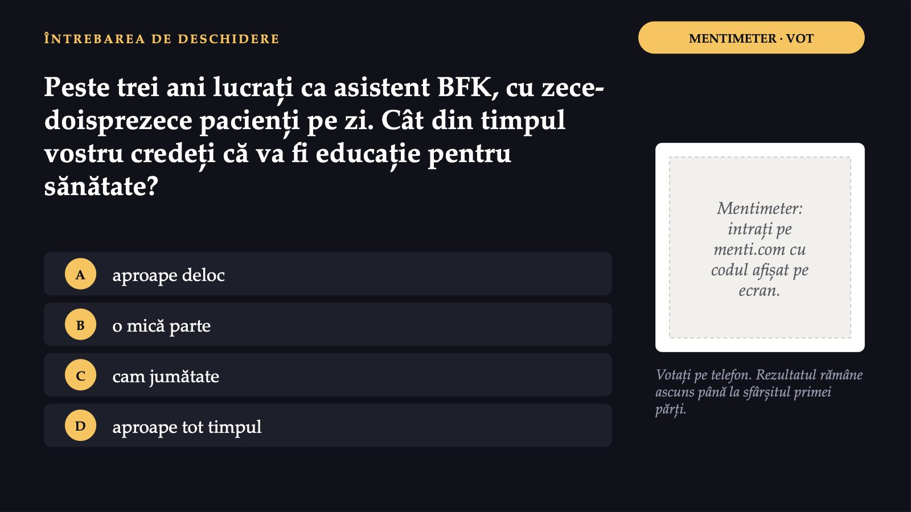
2 / 17Fișa unui post, citită rând cu rând
![UN DOCUMENT REAL Fișa unui post, citită rând cu rând FIȘA POSTULUI Asistent medical licențiat în tehnici de balneofiziokinetoterapie, debutant Poziția în COR Cod: 226924 Pregătirea licență de specialitate, trei ani Locul de muncă laboratorul de recuperare, medicină fizică și balneologie Program 8 ore pe zi, 10–12 pacienți Atribuții specifice aplică planul de tratament prescris de medic; evaluează și reevaluează progresele; notează în foaia de observație Atribuții suplimentare „responsabilități în instruirea personalului medical și a părinților cu privire la normele de educație sanitară” ÎN ECHIPĂ Echipele de patru sau cinci colegi citesc documentul. Unde apare educația pentru sănătate? Extras redat prescurtat din fișa unui post real, publicată de un centru public de recuperare pentru copii la un concurs din 2021.](diapozitive/LP01/003.jpg) 3 / 17
3 / 17226924
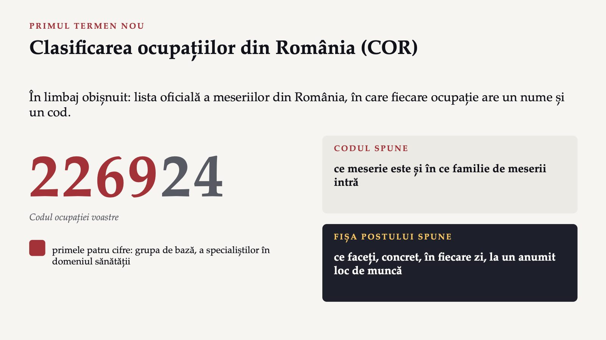
4 / 17Citiți, decideți în echipă, răspundeți
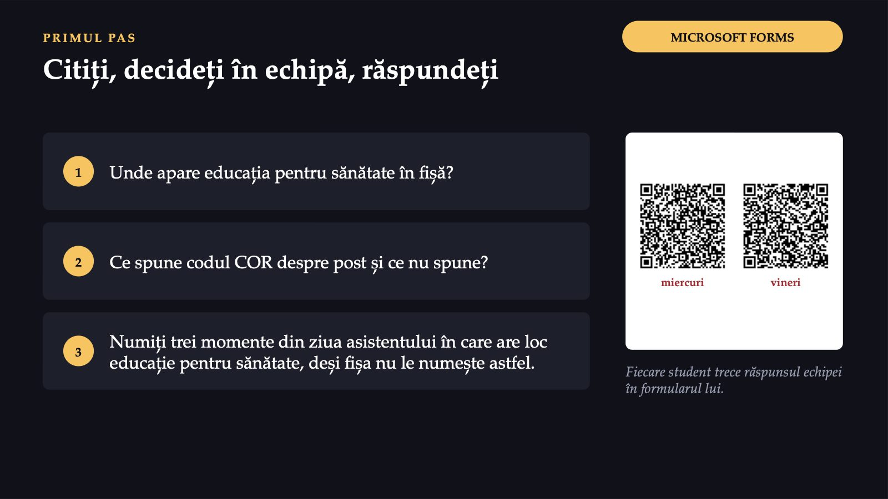
5 / 17Ce a ales grupa?
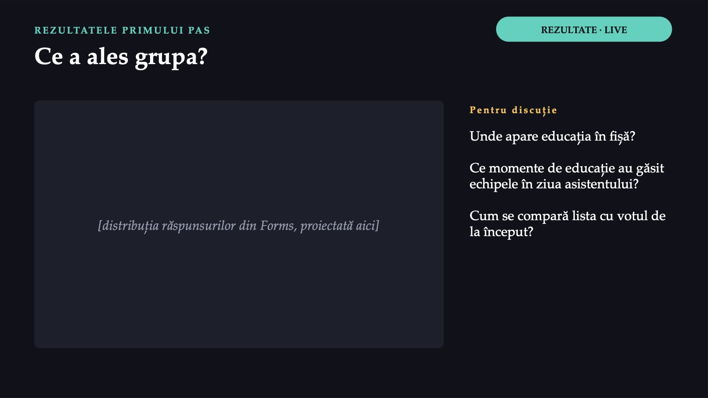
6 / 17Mult mai mult decât lasă să se vadă fișa
![RĂSPUNSUL PROVIZORIU Mult mai mult decât lasă să se vadă fișa Înainte Explicația dată copilului și părintelui, ca să colaboreze: ce urmează și de ce La reevaluare Progresul arătat pacientul vede ce s-a schimbat, iar motivația crește La externare Programul pentru acasă cu demonstrație și cu verificare prin reformulare În fișă, explicit Instruirea părinților educația unei familii care va continua tratamentul acasă La zece-doisprezece pacienți pe zi, fiecare ședință poate avea un moment în care pacientul sau familia învață ceva ce va face singur. Educația face parte din tratament.](diapozitive/LP01/007.jpg) 7 / 17
7 / 17Același rând, scris clar
![CE AR TREBUI SĂ SCRIE ÎN FIȘĂ Același rând, scris clar RÂNDUL DIN FIȘĂ „responsabilități în instruirea personalului medical și a părinților cu privire la normele de educație sanitară” Nu spune cine este educat, despre ce și cum se verifică rezultatul. RÂNDUL REȘCRIS „la încheierea fiecărei serii de tratament, instruiește pacientul și familia în programul de exerciții pentru acasă și verifică, prin demonstrație, că l-au înțeles” verb destinatar conținut verificare Rescrierea unui astfel de rând este una dintre întrebările formularului pentru acasă.](diapozitive/LP01/008.jpg) 8 / 17
8 / 17De ce nu face doamna Elena exercițiile, a doua oară?
![CAZUL CONTINUĂ · PATRU LUNI MAI TÂRZIU De ce nu face doamna Elena exercițiile, a doua oară? Șaptezeci și patru de ani, artroză de genunchi. Programul pentru acasă i-a fost explicat, cu demonstrație, și l-a înțeles. Revine cu genunchiul la fel de dureros: locuiește la etajul patru, într-un bloc fără lift, iar trotuarele din cartier sunt sparte. Nu mai iese. Își petrece ziua în fotoliu, la televizor. Întrebare pentru toată grupa: ce o oprește? Fotografie ilustrativă: trotuar deteriorat (Bytom, Polonia) Foto: Marek Ślusarczyk (Tupungato), CC BY 3.0, via Wikimedia Commons](diapozitive/LP01/009.jpg) 9 / 17
9 / 17Determinanții sănătății
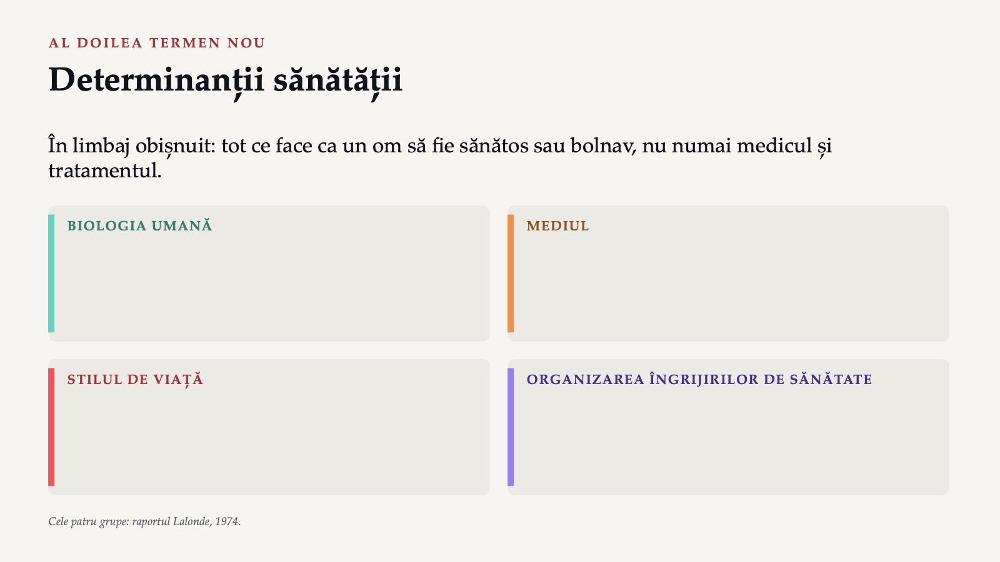
10 / 17Așezați factorii doamnei Elena
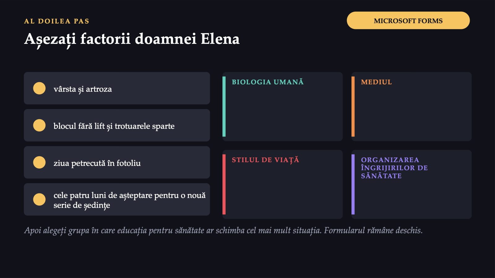
11 / 17Patru grupe, un singur caz
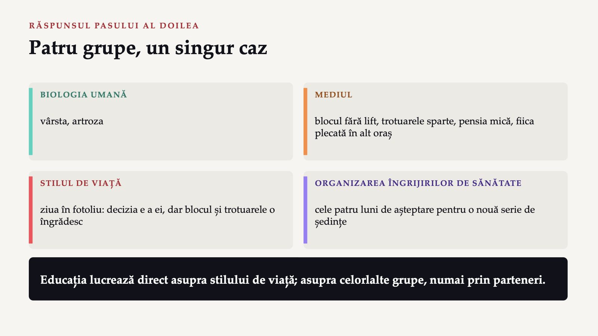
12 / 17Nouă condiții înaintea oricărui sfat
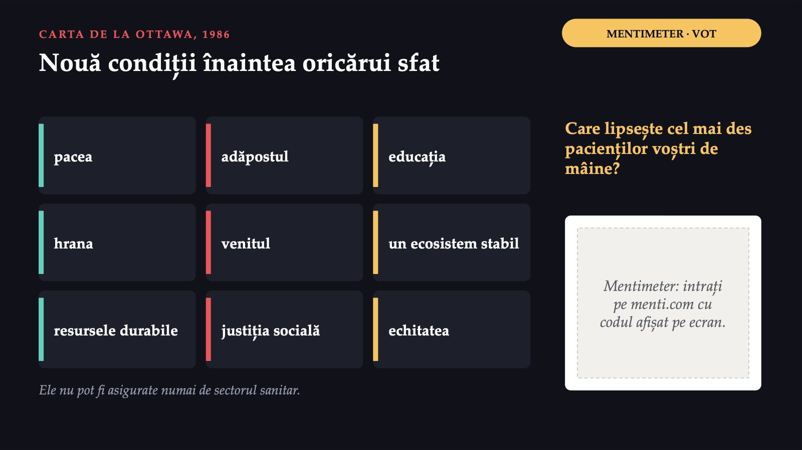
13 / 17Ce se întâmplă în acest cartier?
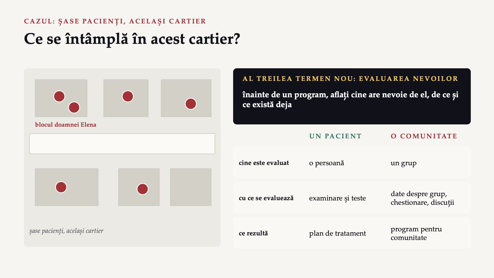
14 / 17Fișa de pornire a proiectului vostru
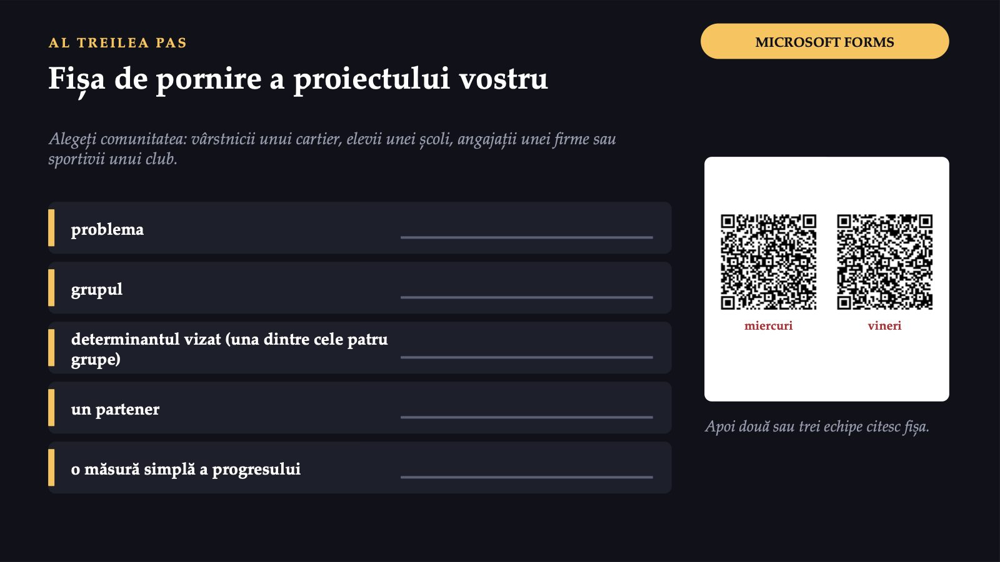
15 / 17O propoziție pe echipă: ce ați schimba la rândul din fișa postului despre educația pentru sănătate?
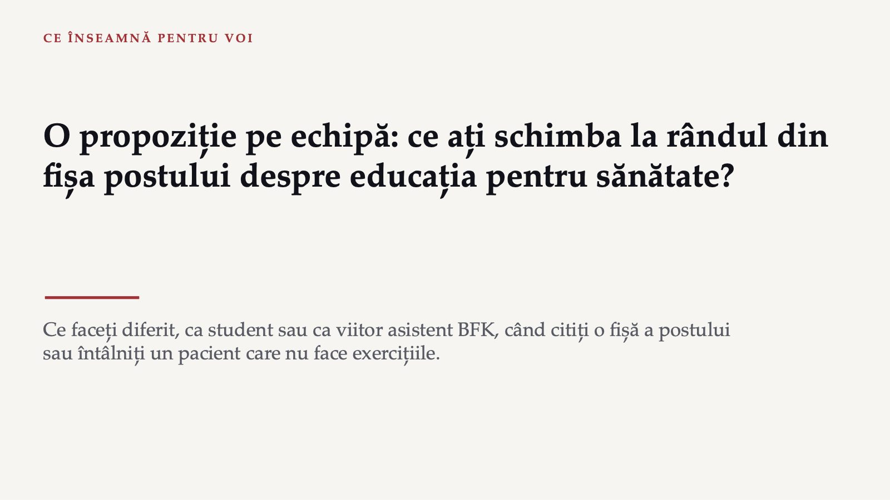
16 / 17Trei întrebări pentru final
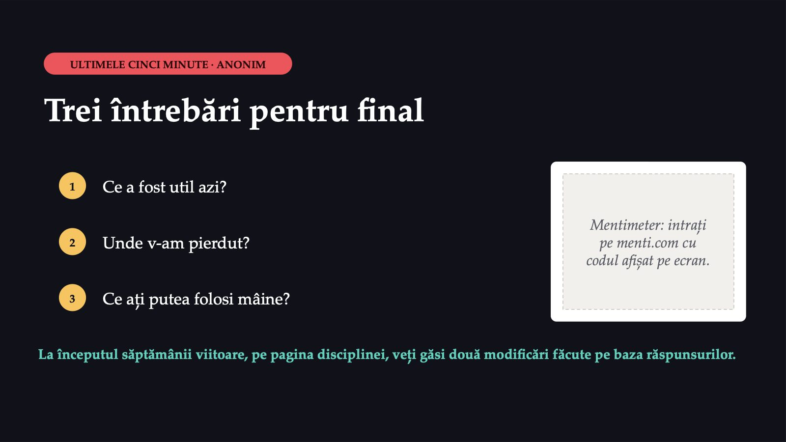
17 / 17Săgeți sau spațiu: navigare · O: vedere de ansamblu · N: notele prezentatorului · F: ecran complet · Esc: închidere